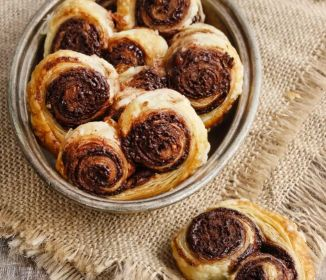

◀ ⎙
Biscuits palmiers à la tapenade
Pour 4 Personnes,
Temps de préparation : 5 mn,
Temps de cuisson : 15 mn,

Ingrédients
- 1 pâte feuilletée
- 1 pot de tapenade noire
Préparation
- Déroulez la pâte feuilletée sur un plan de travail.
- Etalez la tapenade noire sur la pâte.
- Repliez le côté gauche du rectangle de pâte de 2/3 vers la droite.
- Repliez le côté droit du rectangle de pâte de 1/3 vers la gauche.
- Étalez à nouveau la pâte en rectangle.
- Repliez encore les bords droit et gauche vers le centre en laissant au centre un espace de 2 cm.
- Repliez encore le bord gauche de la pâte sur le bord droit.
- Couvrez la pâte de film alimentaire et placez au frais jusqu'à ce qu'elle durcisse.
- Préchauffez le four à 180°C.
- Sortez la pâte du frais et retirez le film alimentaire.
- Détaillez la pâte en tranches de 1/2 cm d'épaisseur à l'aide d'un couteau tranchant.
- Déposez les palmiers sur une plaque de four recouverte de papier sulfurisé.
- Enfournez pendant environ 10 minutes jusqu'à ce que les biscuits soient bien dorés.
- Laissez complètement refroidir à la sortie du four.
- Conservez les biscuits dans une boîte hermétique jusqu'à la dégustation.
Remarques